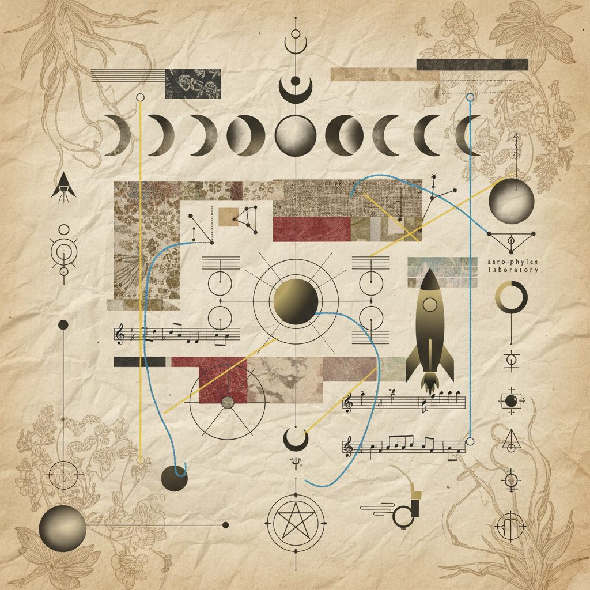

search
clinical_notes
settings
Sequence: 02 / 26 — Ritual Protocol
Practices &
Protocols
Workbook 02 serves as a grounding anchor for the somatic and psychic transition. We engage with the somatic release of the throat and pelvic gate, aligning the vocalized intent with archival shadow audit.

Domain I
fitness_center
Physical
- 01 Throat sounding & resonance resonance
- 02 Pelvic floor release sequence
Domain II
psychology
Emotional
- 01 Shadow audit: The Unspoken
- 02 Value selection & Hierarchical ranking
Domain III
auto_awesome
Spiritual
- 01 Earth grounding visualization
- 02 Throat chakra toning (Eum)
Synthesis of
Observation
Integration occurs when the disparate threads of protocol weave into a singular pattern of behavior. The audit below tracks the transmutation of knowledge into practice.
analytics
Evaluation Metric A
Internal Resistance Threshold
Suppression
Flow State
Evaluation Metric B
Somatic Awareness Consistency
Protocol Finalization Pending